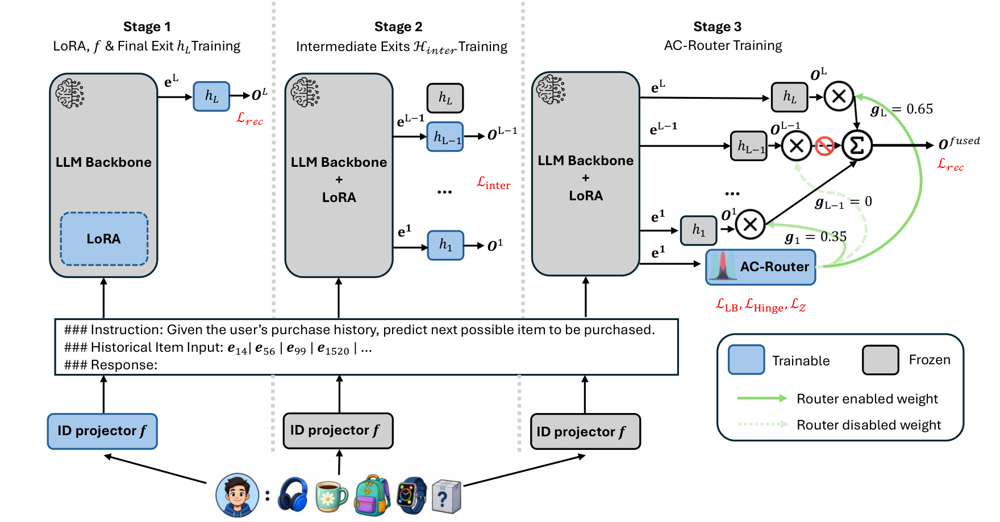
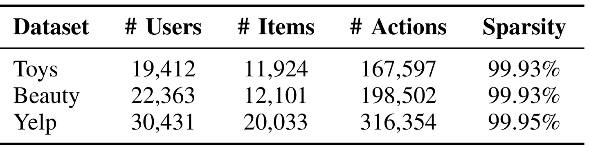
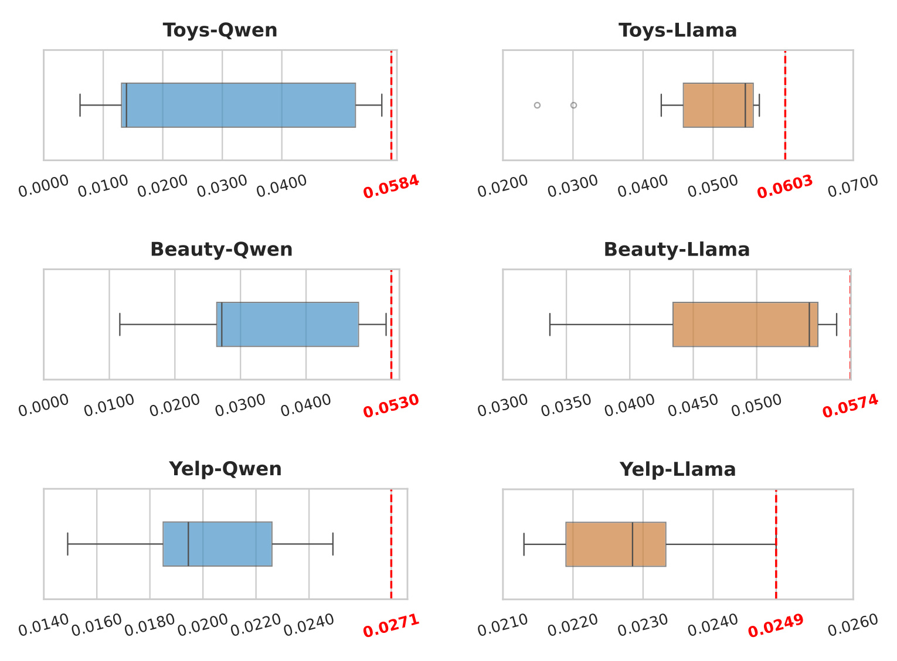
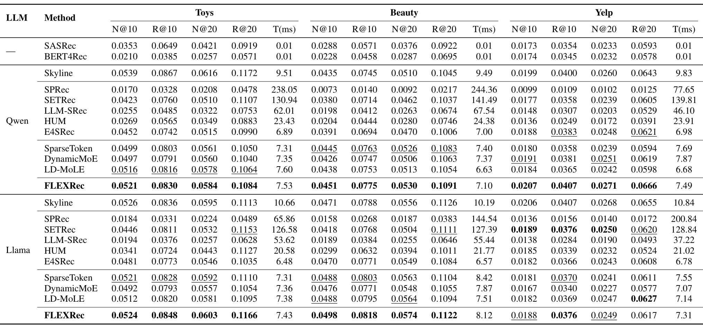
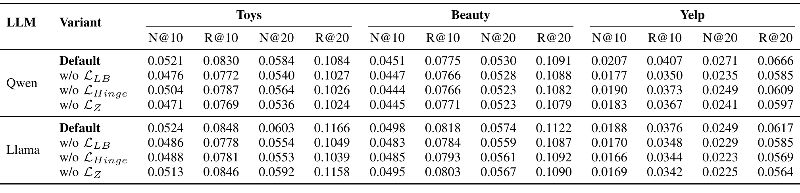
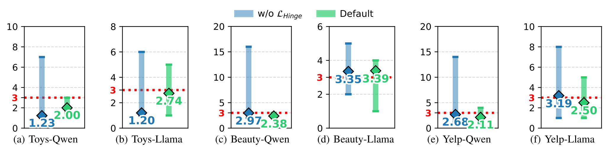
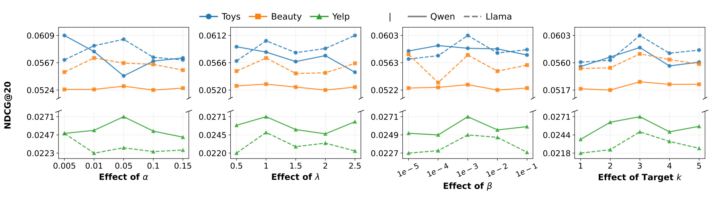
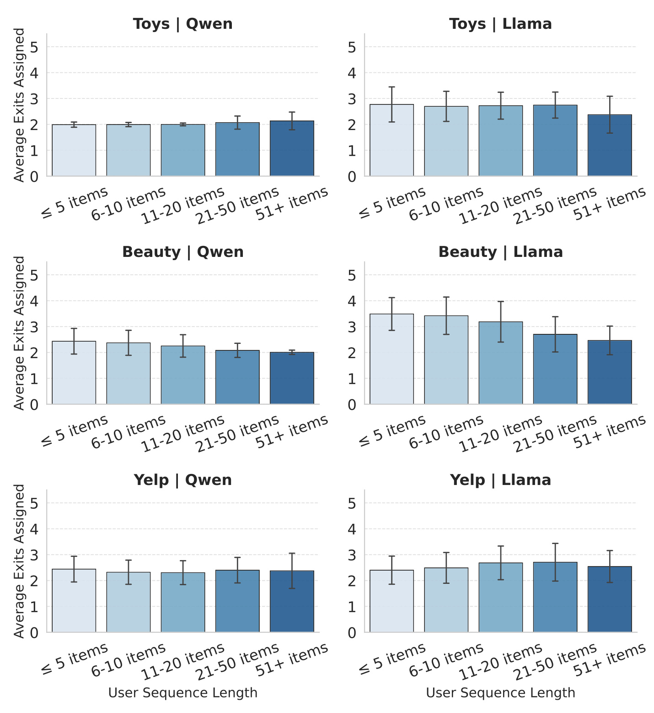

FLEXRec：用分层出口融合增强紧凑型 LLM 推荐器
Empowering Compact LLMs with Fusion of Layer-wise Exits for Recommendation 研究的是一个很具体的工程矛盾：怎样让 30 亿参数以内的语言模型承担序列推荐，同时保留面向全物品库的高效排序。论文由 Xurong Liang、Tong Chen、Quoc Viet Hung Nguyen、Jianxin Li、Xiangliang Zhang 与 Hongzhi Yin 完成，一作主机构是昆士兰大学，合作机构包括 Griffith University、Edith Cowan University 与 University of Notre Dame；论文标注被 ICDM 2026 接收。论文入口为 arXiv:2608.17316，官方代码仓库 已核验，包含数据预处理、三阶段训练和评测脚本，README 当前说明单 GPU 训练。
紧凑型 LLM 能降低推荐系统成本，却也因容量缩小而更难理解多层次用户偏好；现有推理增强、知识蒸馏或自回归生成方案又把收益换成了更高延迟和更差的全库扩展性。即便转向判别式向量排序，固定只读最后一层、让所有序列经过同一条静态路径，也会浪费中间层的互补表征并缺少按样本调节容量的能力。
1. 背景和问题
LLM 推荐器大致有生成式与判别式两条路线。生成式方法把候选物品的名称、语义 ID 或其他标识当成 token，自回归地产生下一物品；它能借助指令、推理链和文本知识，却必须逐 token 解码，还常要用 Trie 等约束保证生成结果落在合法物品集合内。目录一旦扩大，生成速度、合法性约束和 top-N 检索之间会形成尖锐冲突。判别式方法则把语言模型当作用户表示编码器：从交互序列得到一个向量，再与全库物品向量计算相似度。它绕开了自回归解码，能复用成熟的向量检索或矩阵打分链路，更接近工业召回和排序的计算形态。
但“判别式”只解决了解码方式，并没有自动解决紧凑模型的表示能力。论文以 E4SRec 为基础：先用 ID 推荐器得到协同物品嵌入，再投影到 LLM 隐空间，把任务指令、物品序列和 response token 一起送入 Transformer，最后只读取最深层 response token 做全库打分。这个设计对每条用户序列都使用同一最终层。它隐含两个强假设：第一，最后一层一定包含比中间层更适合排序的全部信息；第二，简单的短期重复购买与复杂的长期兴趣迁移需要相同的传播深度和表示组合。作者认为，对 1.7B 或 3B 的紧凑骨干来说，这两个假设都过于浪费。
中间层并不是“尚未完成的最终层”那么简单。浅层更容易保留局部 token 和近邻交互信号，深层则经过更多非线性变换，倾向于形成抽象语义和长期意图。顺序推荐同时需要短期转移与长期偏好，如果只保留最后层，就等于主动丢弃一组可能互补的打分器。反过来，把所有层一律平均又会引入噪声和额外计算：不同骨干、数据集乃至用户序列需要的层组合可能不同。因此论文要解决的不是普通早退——早退通常选择一个出口并尽快停止——而是让一条序列激活可变数量、可变身份的多个出口，再融合它们的全库分数分布。
这也解释了论文为什么借鉴 MoE 路由，却不把“专家”放在层内。传统 Top-k MoE 为每个样本固定选 k 个专家，k 控制计算量但无法因样本改变数量；离散排序又会给端到端优化带来麻烦。FLEXRec 把不同传播深度视为候选专家，使用连续 ReLU 门控让非零权重的个数自然变化，并把最深激活出口当作实际前向终点。于是，路由既决定“融合哪些层”，也决定“最多算到哪一层”。这个改造若成立，紧凑骨干可以用多个较弱但互补的层级预测器补容量，而不必调用更大教师模型，也不必生成冗长推理文本。
这里还有一层容易被“早退”一词遮住的任务差异。分类模型的早退通常只需在少量类别上判断置信度，而推荐系统面对的是一个共享物品库：每个出口不仅要给出局部语义表示，还要把它投影成对同一批物品可比较的排序分布。若不同深度的预测头没有分别校准，门控权重就会混合尺度、熵和偏差不同的分数，路由器可能只是在利用数值差异而非偏好互补。论文用独立出口预热阶段解决这个对齐问题，并在最终路由阶段冻结出口，使性能变化更容易归因到组合策略。这种训练隔离也让论文的实验命题更清晰：只有当固定出口池上的自适应融合超过每个独立出口，才能说明多层信息本身带来了互补收益。
真正困难之处在训练稳定性。ReLU 可能让所有路由 logit 都小于零，从而没有出口；连续路由可能长期偏向少数层；混合精度下 logit 过大又会让 Sigmoid 基数代理饱和，目标出口数失去梯度。论文因此不只提出一个路由器，还把“至少一个、通常不超过 k 个出口”“全局层利用均衡”和“logit 数值锚定”写成三个互补约束。研究问题最终可拆为四个可验证命题：多出口融合能否超过最佳独立出口；紧凑骨干能否接近或超过更大骨干；额外延迟是否仍接近判别式基线；路由是否真的按输入变化，而非退化成固定层或只看序列长度。
2. 方法
2.1 判别式骨干与逐层出口
设用户集合与物品集合分别为 $\mathcal U$、$\mathcal I$，用户 $u$ 的历史序列为 $s_u=(s_{u1},\ldots,s_{ut})$。FLEXRec 先训练 SASRec，取得维度为 $d_{pt}$ 的协同物品表 $E_{pt}$；单层投影 $f$ 再把序列中每个物品的 ID 嵌入映射到 LLM 隐维 $d_{LLM}$。这一步没有让 LLM 直接生成物品名，而是把协同信号注入语言模型输入空间。任务指令、投影后的物品序列和一个 response token 纵向拼接：
符号解释：$E_{inst}\in\mathbb R^{l_{inst}\times d_{LLM}}$ 是长度为 $l_{inst}$ 的指令嵌入，$E_{inj}\in\mathbb R^{t\times d_{LLM}}$ 是交互序列的 ID 注入嵌入，$E_{resp}\in\mathbb R^{1\times d_{LLM}}$ 是承载用户汇总表示的 response token；分号表示沿 token 维拼接。这个输入仍保留文本指令提供的任务条件，但最终输出是物品概率而不是自然语言。
经过第 $l$ 层后得到 $E_l$，取最后一行 $e_l=E_l[-1]$ 作为该深度的用户表示。原 E4SRec 只在第 $L$ 层设置预测头；FLEXRec 在每层后都放置 $h_l:\mathbb R^{d_{LLM}}\rightarrow\mathbb R^{|\mathcal I|}$，形成 $L$ 个可直接面向全库的出口：
符号解释：$h_l$ 是第 $l$ 层的预测头，$|\mathcal I|$ 是物品总数，$O_l$ 是该出口在全物品集合上的概率分布。关键点不是把隐藏状态拼接后再训练一个大头，而是先把每一层校准成可独立排名的完整分布，再在分布层融合。这样各层输出处于同一物品坐标系；代价是每个被激活出口都要产生全库 logits，物品数很大时预测头和分数融合仍可能成为显存、带宽或候选裁剪瓶颈。
2.2 AC-Router：安全连续门控与稀疏融合
AC-Router 只读取第一层 response 表示，以一个投影矩阵产生所有出口的路由 logit： 符号解释：$e_1\in\mathbb R^{d_{LLM}}$ 是第一层 response token，$W_z\in\mathbb R^{d_{LLM}\times L}$ 是路由器唯一的可学习投影，$z\in\mathbb R^L$ 的第 $l$ 项对应第 $l$ 个出口。由于路由在第一层后即可决定，模型不必先跑完整骨干再选择；但它也意味着所有复杂度判断被压缩到第一层表示，若第一层无法辨认后续所需语义深度，路由可能系统性误配。
作者不用固定 Top-k，而对 logit 施加 ReLU。普通 ReLU 存在全负向量导致“零出口”的风险，因此先做带停止梯度的条件平移： 符号解释：$\epsilon$ 是安全裕量，实验取 $0.1$；$s$ 只在最大 logit 仍低于 $\epsilon$ 时为负，减去它会把最大项抬到至少 $\epsilon$；$\operatorname{sg}$ 表示停止梯度，防止优化器靠任意放大平移量钻空子；$w$ 是非负稀疏权重。这个机械约束保证至少一个出口存活。相较固定 k，ReLU 的非零集合可覆盖 $2^L-1$ 种组合，数量和身份都能随序列改变。
非零权重归一化后定义激活集合，并据此确定前向终点和融合分布： 符号解释：$\xi$ 是防止除零的小常数，实验取 $10^{-9}$；$g_l$ 是归一化门权重，$\mathcal A$ 是激活出口集合，$l_{max}$ 是最深激活层。实际计算只传播到 $l_{max}$，之后的 Transformer 层与出口全部跳过。注意，激活一个浅层出口不会节省此前层的串行计算，真正决定深度成本的是最深出口而不是出口个数本身。
符号解释：$O_l$ 是第 $l$ 个出口的全库分布，$g_l$ 是其权重，$O_{fused}$ 是最终用于 top-N 排名的融合分布。融合发生在概率层，保持与 E4SRec 相同的物品空间。这里的效率边界要说清：提前停止能省去 $l_{max}$ 之后的骨干层，但多个出口仍要计算多个 $|\mathcal I|$ 维预测与加权；论文的不到 1ms 增量来自当前物品规模和单 GPU 实验，不能直接等同于超大工业目录上的恒定开销。
2.3 三项路由约束：容量、均衡与数值稳定
连续门控若没有容量约束，可能为了降低推荐损失而开启过多出口。FLEXRec 用 Sigmoid 对“logit 是否为正”作平滑近似，构造目标区间 $[1,k]$ 的非对称双边 hinge： 符号解释：$C$ 是连续估计的激活出口数，$\sigma$ 是 Sigmoid，$\tau$ 是控制逼近锐度的温度，实验取 $10$；$k$ 是期望上界，默认 $3$；$\gamma\ge1$ 加重低于一个出口的惩罚，实验取 $2$。当 $C>k$，第一项压低多余正 logit；当 $C<1$，第二项推动至少一个出口存活。它不是硬限制，因而真实激活数仍可能超过 k，这给复杂样本保留弹性，也意味着延迟只有统计性预算而非逐请求上界。
只约束数量仍可能让所有序列反复选择同一小组层。作者对批内原始 logit 先做 Softmax，再统计每层平均竞争份额并最小化其平方和： 符号解释：$B$ 是批大小，$z^{(b)}$ 是第 $b$ 个序列的路由 logit，$\bar P_l$ 是第 $l$ 层在整个批次的平均份额，$L_{LB}$ 是负载均衡损失。乘以 $L$ 只改变尺度，平方和在均匀分配时最小。Softmax 代理避免了把所有 logit 都压成负数来虚假降低负载，但它优化的是批级使用率，不保证单样本选择语义合理。
混合精度下过大的 logit 会让 Sigmoid 接近 0 或 1，基数估计几乎没有梯度。Z-loss 直接锚定投影输出： 符号解释：$z$ 是未平移、未 ReLU 的原始路由 logit，$\operatorname{mean}$ 对批次和出口维取均值。平方惩罚把 logit 留在零附近，既降低数值溢出风险，也让 $L_{Hinge}$ 的 Sigmoid 代理保有斜率。它与 $L_{LB}$ 的职责不同：前者约束幅度和梯度，后者约束不同层的总体流量。
2.4 三阶段训练：先造可用出口，再只训路由器
训练被刻意拆开。Stage 1 只训练 ID projector、LoRA 和最终出口 $h_L$，用最终层分布做下一物品交叉熵： 符号解释：$s_{t+1}^{u}$ 是用户 $u$ 的真实下一物品，$O_L[s_{t+1}^{u}]$ 是最终出口分给该物品的概率。Stage 1 先让紧凑 LLM 骨干和协同 ID 空间对齐。Stage 2 冻结上述组件，训练 $L-1$ 个中间出口，使每一层都成为可用排名器：
符号解释：$O_l[s_{t+1}^{u}]$ 是第 $l$ 个中间出口给真实物品的概率，外层平均让各出口获得同等训练权。此时骨干不再漂移，出口学习的是固定层表征到物品分布的映射，避免路由器面对不断移动的专家池。
Stage 3 冻结骨干、投影和全部出口，只训练 $W_z$。融合分布上的推荐损失仍参与优化，三项辅助目标组成： 符号解释：$\alpha$、$\lambda$、$\beta$ 分别控制负载均衡、目标基数和数值锚定；实验默认围绕 $\alpha$、$\lambda$、$\beta$ 搜索，并把 $L_{router}$ 与以 $O_{fused}$ 计算的 $L_{rec}$ 共同用于路由训练。这种“先训练骨干、再校准所有出口、最后只学习路由”的顺序，是 FLEXRec 能把融合归因于路由策略而不是联合训练漂移的核心设计。

Figure 1 从左到右把参数所有权画得很清楚。Stage 1 的蓝色模块只有 LoRA、ID projector 与最终出口，目标是先得到可用的 E4SRec 骨干；Stage 2 把这些模块冻结，只把各中间出口标蓝，用 $L_{inter}$ 逐层预热；Stage 3 又把出口池冻结，仅让 AC-Router 的投影学习绿色门权重，并同时承受推荐损失和三项路由正则。示例中第 1 层与最终层分别获得 0.35、0.65，第 $L-1$ 层为零，因此融合只使用两个分布。图也揭示了效率的真实来源：路由器在 $e_1$ 处做决定，若最深激活层较浅，后续骨干可以停止；若最终层被激活，骨干计算与 E4SRec 基本相同，收益主要来自多层集成而非提前退出。三阶段的代价是训练流程更长、需要保存与校准多个全库预测头，但 Stage 3 足够轻，可在同一冻结骨干上为不同设备预算训练不同 k 的路由器。
3. 实验结果
3.1 数据、任务与可比口径
实验使用 Amazon Toys and Games、Amazon Beauty 与 Yelp 三套公开数据，执行 5-core 过滤；每个用户最后一个交互作测试、倒数第二个作验证，其余作训练。指标是 NDCG@10/20 与 Recall@10/20，并记录平均单用户推理时间。骨干分别为 Qwen 3 1.7B 和 Llama 3.2 3B；更大的 Qwen 3 4B、Llama 3.1 8B 只作为 E4SRec Skyline。基线覆盖 SASRec、BERT4Rec，判别式 E4SRec，生成或蒸馏路线 SPRec、SETRec、LLM-SRec、HUM，以及把同一多出口结构换成 SparseToken、DynamicMoE、LD-MoLE 路由的版本。全部实验在单张 NVIDIA H100 PCIe 80GB 上运行。

Table I 显示三个数据集都极度稀疏：Toys 有 19,412 个用户、11,924 个物品与 167,597 次行为，Beauty 为 22,363、12,101 与 198,502，Yelp 为 30,431、20,033 与 316,354；标注稀疏度分别是 99.93%、99.93% 和 99.95%。Yelp 的用户、物品和行为规模都最大，却也最稀疏，因此它是检验路由器能否在弱协同信号下稳定工作的关键组。另一方面，这些物品库仍只有约 1.2 万到 2 万，远小于大型内容平台的千万级目录；论文的“全库排序”说明评测没有采样少量负例，却不能自动推出全量预测头在超大目录下仍经济。leave-one-out 也强调单步下一物品准确率，没有覆盖会话内多目标、长周期价值或线上反馈回路。
3.2 主结果：紧凑骨干、全库排序与延迟
先看“融合是否真的超过单层”。Figure 2 把每个独立出口的 NDCG@20 画成分布，红色虚线是 FLEXRec。六个数据集-骨干组合中，红线都在单出口分布右侧：Toys-Qwen 0.0584、Toys-Llama 0.0603、Beauty-Qwen 0.0530、Beauty-Llama 0.0574、Yelp-Qwen 0.0271、Yelp-Llama 0.0249。这个结果排除了“路由器只是找到了某个被最终层忽视的最优单层”这一简单解释，因为融合值高于图中的最佳单出口。它更支持层间概率互补：不同深度在同一用户上提供的错误并不完全重合，加权集成能提高正确物品的相对位置。不过图只给分布和融合终点，没有按用户报告选择不同出口后相对固定最佳层的增益分解，也没有置信区间，因此还不能确定优势在用户间是否均匀。

Figure 2 的横轴是 NDCG@20，箱体与须概括所有独立层出口的性能，红线和红色数值是融合模型。Toys-Qwen 的层间跨度最大，约从接近 0 到 0.056，而融合达到 0.0584；Toys-Llama 的独立层更集中在 0.045-0.055，融合仍推到 0.0603。Beauty-Llama 的最好独立出口几乎贴近 0.0574，融合收益相对小，但没有倒退。Yelp 两个骨干的绝对 NDCG 较低，仍分别把融合值推到 0.0271 和 0.0249。因各子图横轴范围不同，不能用箱体视觉宽度跨数据集比较难度；正确读法是看红线相对本子图独立层最右端的位置。该证据证明层融合有效，却没有说明究竟哪些层互补、哪些用户贡献最大，这需要结合路由权重或逐用户反事实分析。
主表进一步给出三点。第一，在 Qwen 1.7B 上，FLEXRec 的 Toys、Beauty、Yelp NDCG@20 为 0.0584、0.0530、0.0271，均高于紧凑骨干可比方法；相对 E4SRec 的 0.0515、0.0470、0.0248，提升是明确的。第二，在 Llama 3.2 3B 上，对应值为 0.0603、0.0574、0.0249；Yelp 的 Recall@20 为 0.0617，低于 LD-MoLE 的 0.0627，也低于 Qwen-FLEXRec 的 0.0666，因此“始终所有指标最好”并不成立。第三，FLEXRec 在 Beauty 两个骨干和 Yelp-Qwen 的若干指标超过更大 Skyline，但 Toys 上仍由 Skyline 保持接近或更高结果；论文证明紧凑骨干可以通过融合缩小规模差距，而不是普遍消除规模效应。

Table II 把准确率与延迟放在同一张表。Qwen-FLEXRec 的单用户时间为 Toys 7.53ms、Beauty 7.10ms、Yelp 7.49ms，对应 E4SRec 是 6.89、7.00、6.98ms；Llama-FLEXRec 为 7.43、8.12、7.31ms，对应 E4SRec 为 6.48、6.57、6.78ms。多数差值小于 1ms，但 Beauty-Llama 高出 1.55ms，故正文“less than 1ms overhead”与表中至少这一设置并不完全一致，解读时应以逐格数据为准。生成式或复杂 LLM 基线常达到几十至两百多毫秒，说明判别式全库分数路线在当前目录规模下确有吞吐优势；传统 SASRec/BERT4Rec 约 0.01ms，又提醒我们 FLEXRec 的“高效”是相对其他 LLM 推荐器，不是相对全部推荐模型。表中没有显存、batch throughput、P95/P99 或最深激活层分布，线上服务成本仍未被完整测量。
3.3 三个路由正则是否都必要
Table III 逐项删除 $L_{LB}$、$L_{Hinge}$、$L_Z$。默认配置在三数据集、两骨干的全部十二个准确率指标上都高于同骨干的三个删减版本。以 Qwen-Yelp NDCG@20 为例，默认 0.0271，去掉负载均衡、hinge、Z-loss 后分别为 0.0235、0.0249、0.0241；稀疏数据上的路由崩坏尤其明显。Llama-Toys 的 NDCG@20 从默认 0.0603 降到 0.0554、0.0553、0.0592，其中 Z-loss 影响相对小；但 Llama-Yelp 去掉 Z-loss 后 NDCG@20 从 0.0249 降至 0.0225，说明数值锚定的价值依数据与骨干而变。消融证明三者联合最好，却未提供训练失败率、logit 分布或多随机种子方差，尚不能区分稳定性收益和纯正则化收益。

Table III 的列按 Toys、Beauty、Yelp 分组，每组含 NDCG/Recall@10/20；行按 Qwen、Llama 分组，Default 下依次移除三项损失。不能只看粗体默认行，还要观察退化模式：去掉 $L_{LB}$ 时 Qwen-Toys NDCG@10 从 0.0521 降到 0.0476，说明批级层利用均衡并非装饰；去掉 $L_{Hinge}$ 时 Llama-Yelp NDCG@10 从 0.0188 降到 0.0166，说明基数失控会污染融合；去掉 $L_Z$ 在 Llama-Toys 上影响较小，却在 Qwen-Toys 和两种 Yelp 设置上明显下降。这与三项损失的分工一致，但表没有“只用其中一项”或两两组合，也没有把准确率变化和实际计算量变化联合成 Pareto 曲线，因此还不能估计每个正则的边际成本收益。
Figure 3 专门检查 hinge 是否控制激活数量。默认 target $k=3$，绿色默认配置的平均出口数在六种设置中约为 2.00、2.74、2.38、3.39、2.11、2.50；连续代理和软约束允许 Beauty-Llama 略高于 3。去掉 hinge 后，平均值有时反而下降，例如 Toys-Llama 从 2.74 变为 1.20，但最小到最大范围显著变宽；Beauty-Qwen 最大可到 16、Yelp-Qwen 到 14。这说明 hinge 的功能不是机械把均值锁在 3，而是抑制跨请求的极端尾部，同时避免大量样本只剩一个出口。对延迟敏感的线上系统，范围和高分位比均值更重要。

Figure 3 中蓝色是无 hinge，绿色是默认；竖线表示所有样本的最小—最大范围，菱形是均值，红色虚线是目标 3。Toys-Qwen 的无 hinge 均值仅 1.23，却有样本激活到 7 层；默认均值增至 2.00，最大值收敛到 3。Beauty-Qwen 更突出：均值从 2.97 降到 2.38 的变化并不大，但最大值从 16 收缩到 4。由此可见，只报告平均激活出口数会掩盖计算尾部，作者的软 hinge 主要是在缩短异常长路径。图仍没有把激活数换算成 $l_{max}$、FLOPs 或 P99 延迟：激活三个相邻浅层与激活一个最终层的骨干成本完全不同，所以它证明“出口基数更稳”，尚未完整证明“逐请求算力更稳”。 对服务系统来说，下一步应把纵轴改成真实计算量或最深层分位数，并单独核对尾部请求是否仍满足预算。
3.4 超参数敏感性与目标容量
Figure 4 同时扫描 $\alpha$、$\lambda$、$\beta$ 与 k。$\alpha$ 的最佳点明显依赖数据与骨干：Qwen-Yelp 在 0.05 较好，Qwen-Toys 却在该点出现明显低谷，Llama-Toys 又在 0.05 达峰。$\lambda=1$ 整体较稳，继续加大时部分设置下降，说明过强基数惩罚会牺牲有价值的多层信号。$\beta=10^{-3}$ 在多数设置达到或接近最好，尤其修复 Beauty-Llama 在 $10^{-4}$ 的跌落。k 的趋势最一致：六条曲线都在 k=3 达到本组峰值，过小限制语义互补，过大则引入冗余或噪声。

Figure 4 使用断开的纵轴把 Toys/Beauty 的约 0.052-0.061 与 Yelp 的约 0.022-0.027 放在同一子图，实线为 Qwen、虚线为 Llama，颜色区分数据集。阅读时不能把断轴上下段的垂直距离当作同一尺度。最有说服力的是最右 k 子图：所有曲线在 3 处形成局部峰值，支持默认容量设置。相比之下，$\alpha$ 子图的曲线互相冲突，说明负载均衡强度需要针对数据稀疏度和骨干层动态校准；固定一套参数跨域部署可能损失精度。曲线每个点未给误差条，也未报告搜索成本。论文在同一测试体系上选择超参数时是否可能产生选择偏差，需要用独立验证集搜索记录和多种子结果进一步确认。 若部署端要提供多个预算档位，不能只复用 k=3 的最佳点，还应为每个 k 重新搜索三项正则并画出准确率—延迟曲线。
3.5 路由案例：序列长度不是唯一决策变量
作者把序列长度分成不超过 5、6-10、11-20、21-50、51 以上五组，统计平均激活出口数。整体上 Llama 通常使用约 2.5-3.5 个出口，Qwen 约 2-2.5 个，说明同一个 k 并不会抹平骨干差异。长度趋势也不是单调：Toys-Qwen 随长度略升，Beauty 两骨干反而随长度增长下降，Yelp 两骨干中间组略高。更重要的是误差棒在许多组内相当宽，尤其 Llama；相同长度的用户仍收到不同路由，表明第一层表示包含超出长度的序列内容信号。

Figure 5 是三行两列：每行对应 Toys、Beauty、Yelp，左列 Qwen、右列 Llama；纵轴是平均激活出口数，误差棒为标准差。Toys-Qwen 几乎稳定在 2，51+ 组略升；Beauty-Qwen 从约 2.5 逐步降到 2，说明更长历史不必然需要更多层。Beauty-Llama 从短序列约 3.5 降到长序列约 2.5，可能意味着重复或稳定偏好更容易压缩，也可能来自不同长度组的数据分布差异，论文没有做因果区分。Yelp 则在中长组略升。该图支持“不是固定长度阈值”的主张，但只按长度做了一个切面；若要证明路由理解行为复杂度，还应按兴趣熵、品类切换率、流行度、冷启动程度和预测置信度分组，并展示出口身份而不仅是数量。
4. 总结
4.1 我的判断
FLEXRec 的贡献不是发明新的物品语义编码器，而是把紧凑 LLM 已经计算出的中间层变成一组可校准的全库排名器，再用可变基数路由融合。它保留了判别式推荐的关键优势：一次前向后直接在物品空间排序；同时用层级集成补偿小模型最终层容量不足。Figure 2 证明融合超过最佳独立出口，Table II 证明在三套数据和两种紧凑骨干上有稳定准确率收益，Table III 与 Figure 3 又把收益和三项路由约束联系起来。证据链条完整度较高。
工程上最值得迁移的不是“每层都加头”这一表面结构，而是先冻结并校准候选预测器，再用轻量路由学习精度—计算预算。这可映射到多塔召回、级联排序、多兴趣表示或不同蒸馏学生的动态组合。对大模型系统，它也提示早退不必只选择单点输出：在不同深度的预测已对齐到共同标签空间时，稀疏融合可能比硬早退更稳。
4.2 局限、复现与后续跟进
局限至少有五点。第一，实验只有三套公开离线数据，5-core 与 leave-one-out 不能替代线上点击、转化、长周期满意度和分布漂移。第二，物品数约 1.2 万至 2 万；每个出口生成 $|\mathcal I|$ 维分布，在百万或千万目录上的显存、带宽和近似检索适配没有验证。第三，所有实验使用单张 H100，延迟是平均单用户时间，没有 batch throughput、P95/P99、显存、能耗与 $l_{max}$ 分布；而 Table II 的 Beauty-Llama 增量超过 1ms，与概括性文字存在口径张力。第四，路由器只看第一层 response 表示，缺少路由错误、出口身份、用户子群公平性和分布外输入分析。第五，三阶段训练依赖 SASRec 预训练、LoRA、多个全库出口和独立路由阶段，训练总成本及检查点管理并不等于“零额外成本”。
复现时应先固定 E4SRec 骨干，逐层验证每个出口的 NDCG 分布，再训练路由；否则无法判断提升来自出口预热还是门控。还应同时记录激活数、$l_{max}$、实际 FLOPs、预测头耗时与 P99 延迟，并分别在候选集打分和真正全库打分下测量。后续最值得跟进三条：其一，把出口头改成共享低秩或两阶段检索结构，测试超大目录的成本；其二，按兴趣熵、品类跳转和冷启动程度解释路由，确认它学到的是行为复杂度而非长度代理；其三，用多随机种子与线上 shadow 流量画准确率—延迟 Pareto 前沿。官方仓库已给出单 GPU 三阶段脚本，适合作为复现入口，但在出现这些证据前，更稳妥的结论是：FLEXRec 展示了紧凑 LLM 的多层表征可以被有效复用，而不是已经完成工业 serving 的全面验证。